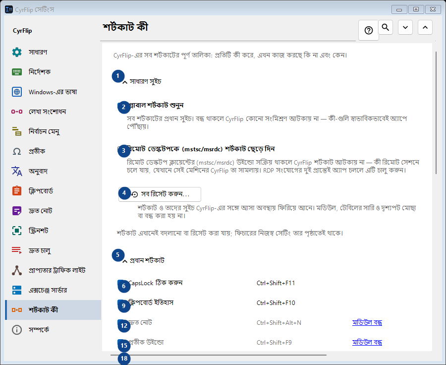
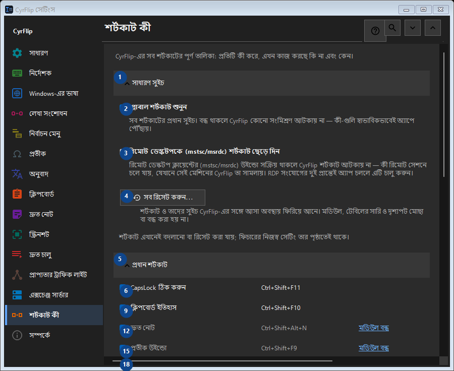

শর্টকাট কী
এর কাজ
CyrFlip-এর সব শর্টকাটের পূর্ণ তালিকা: প্রতিটি কী করে, এখন কাজ করছে কি না এবং কেন।


ব্যবহারের ক্রম
সেটিং সঙ্গে সঙ্গে প্রয়োগ হয়। নির্দিষ্ট ক্রম নেই; নিচের দলগুলি ব্যবহার করুন।
উপাদান
1. সাধারণ সুইচ
উল্লিখিত কাজের জন্য এই নির্দেশ ব্যবহার করুন। মেনে নেওয়ার আগে নিশ্চিতকরণ পড়ুন।
আপনার শর্টকাট2. গ্লোবাল শর্টকাট শুনুন
সব শর্টকাটের প্রধান সুইচ। বন্ধ থাকলে CyrFlip কোনো সংমিশ্রণ আটকায় না — কী-গুলি স্বাভাবিকভাবেই অ্যাপে পৌঁছায়।
আপনার শর্টকাট3. রিমোট ডেস্কটপকে (mstsc/msrdc) শর্টকাট ছেড়ে দিন
রিমোট ডেস্কটপ ক্লায়েন্টের (mstsc/msrdc) উইন্ডো সক্রিয় থাকলে CyrFlip শর্টকাট আটকায় না — কী রিমোট সেশনে চলে যায়, যেখানে সেই মেশিনের CyrFlip তা সামলায়। RDP সংযোগের দুই প্রান্তেই অ্যাপ চললে এটি চালু করুন।
আপনার শর্টকাট4. সব রিসেট করুন...
শর্টকাট ও তাদের সুইচ CyrFlip-এর সঙ্গে আসা অবস্থায় ফিরিয়ে আনে। মডিউল, টেবিলের সারি ও দৃশ্যপট মোছা বা বন্ধ করা হয় না।
আপনার শর্টকাট5. প্রধান শর্টকাট
উল্লিখিত কাজের জন্য এই নির্দেশ ব্যবহার করুন। মেনে নেওয়ার আগে নিশ্চিতকরণ পড়ুন।
আপনার শর্টকাট6. CapsLock ঠিক করুন Ctrl+Shift+F11
উল্লিখিত কাজের জন্য এই নির্দেশ ব্যবহার করুন। মেনে নেওয়ার আগে নিশ্চিতকরণ পড়ুন।
আপনার শর্টকাট7. বদলান... - CapsLock ঠিক করুন Ctrl+Shift+F11
উল্লিখিত কাজের জন্য এই নির্দেশ ব্যবহার করুন। মেনে নেওয়ার আগে নিশ্চিতকরণ পড়ুন।
আপনার শর্টকাট8. ডিফল্ট করুন - CapsLock ঠিক করুন Ctrl+Shift+F11
উল্লিখিত কাজের জন্য এই নির্দেশ ব্যবহার করুন। মেনে নেওয়ার আগে নিশ্চিতকরণ পড়ুন। এই উপাদান এখন উপলব্ধ নয়। আগে বৈশিষ্ট্য চালু করুন বা একটি এন্ট্রি বাছুন।
আপনার শর্টকাট9. ক্লিপবোর্ড ইতিহাস Ctrl+Shift+F10
উল্লিখিত কাজের জন্য এই নির্দেশ ব্যবহার করুন। মেনে নেওয়ার আগে নিশ্চিতকরণ পড়ুন।
আপনার শর্টকাট10. বদলান... - ক্লিপবোর্ড ইতিহাস Ctrl+Shift+F10
উল্লিখিত কাজের জন্য এই নির্দেশ ব্যবহার করুন। মেনে নেওয়ার আগে নিশ্চিতকরণ পড়ুন।
আপনার শর্টকাট11. ডিফল্ট করুন - ক্লিপবোর্ড ইতিহাস Ctrl+Shift+F10
উল্লিখিত কাজের জন্য এই নির্দেশ ব্যবহার করুন। মেনে নেওয়ার আগে নিশ্চিতকরণ পড়ুন। এই উপাদান এখন উপলব্ধ নয়। আগে বৈশিষ্ট্য চালু করুন বা একটি এন্ট্রি বাছুন।
আপনার শর্টকাট12. দ্রুত নোট Ctrl+Shift+Alt+N
উল্লিখিত কাজের জন্য এই নির্দেশ ব্যবহার করুন। মেনে নেওয়ার আগে নিশ্চিতকরণ পড়ুন।
আপনার শর্টকাট13. বদলান... - দ্রুত নোট Ctrl+Shift+Alt+N
উল্লিখিত কাজের জন্য এই নির্দেশ ব্যবহার করুন। মেনে নেওয়ার আগে নিশ্চিতকরণ পড়ুন।
আপনার শর্টকাট14. ডিফল্ট করুন - দ্রুত নোট Ctrl+Shift+Alt+N
উল্লিখিত কাজের জন্য এই নির্দেশ ব্যবহার করুন। মেনে নেওয়ার আগে নিশ্চিতকরণ পড়ুন। এই উপাদান এখন উপলব্ধ নয়। আগে বৈশিষ্ট্য চালু করুন বা একটি এন্ট্রি বাছুন।
আপনার শর্টকাট15. প্রতীক উইন্ডো Ctrl+Shift+F9
উল্লিখিত কাজের জন্য এই নির্দেশ ব্যবহার করুন। মেনে নেওয়ার আগে নিশ্চিতকরণ পড়ুন।
আপনার শর্টকাট16. বদলান... - প্রতীক উইন্ডো Ctrl+Shift+F9
উল্লিখিত কাজের জন্য এই নির্দেশ ব্যবহার করুন। মেনে নেওয়ার আগে নিশ্চিতকরণ পড়ুন।
আপনার শর্টকাট17. ডিফল্ট করুন - প্রতীক উইন্ডো Ctrl+Shift+F9
উল্লিখিত কাজের জন্য এই নির্দেশ ব্যবহার করুন। মেনে নেওয়ার আগে নিশ্চিতকরণ পড়ুন। এই উপাদান এখন উপলব্ধ নয়। আগে বৈশিষ্ট্য চালু করুন বা একটি এন্ট্রি বাছুন।
আপনার শর্টকাট18. প্রাপ্যতার ট্রাফিক লাইট Ctrl+Shift+Alt+T
উল্লিখিত কাজের জন্য এই নির্দেশ ব্যবহার করুন। মেনে নেওয়ার আগে নিশ্চিতকরণ পড়ুন।
আপনার শর্টকাট19. বদলান... - প্রাপ্যতার ট্রাফিক লাইট Ctrl+Shift+Alt+T
উল্লিখিত কাজের জন্য এই নির্দেশ ব্যবহার করুন। মেনে নেওয়ার আগে নিশ্চিতকরণ পড়ুন।
আপনার শর্টকাট20. ডিফল্ট করুন - প্রাপ্যতার ট্রাফিক লাইট Ctrl+Shift+Alt+T
উল্লিখিত কাজের জন্য এই নির্দেশ ব্যবহার করুন। মেনে নেওয়ার আগে নিশ্চিতকরণ পড়ুন। এই উপাদান এখন উপলব্ধ নয়। আগে বৈশিষ্ট্য চালু করুন বা একটি এন্ট্রি বাছুন।
আপনার শর্টকাট21. স্ক্রিনের একটি অংশের স্ক্রিনশট Ctrl+F12
উল্লিখিত কাজের জন্য এই নির্দেশ ব্যবহার করুন। মেনে নেওয়ার আগে নিশ্চিতকরণ পড়ুন।
আপনার শর্টকাট22. বদলান... - স্ক্রিনের একটি অংশের স্ক্রিনশট Ctrl+F12
উল্লিখিত কাজের জন্য এই নির্দেশ ব্যবহার করুন। মেনে নেওয়ার আগে নিশ্চিতকরণ পড়ুন।
আপনার শর্টকাট23. ডিফল্ট করুন - স্ক্রিনের একটি অংশের স্ক্রিনশট Ctrl+F12
উল্লিখিত কাজের জন্য এই নির্দেশ ব্যবহার করুন। মেনে নেওয়ার আগে নিশ্চিতকরণ পড়ুন। এই উপাদান এখন উপলব্ধ নয়। আগে বৈশিষ্ট্য চালু করুন বা একটি এন্ট্রি বাছুন।
আপনার শর্টকাট24. পুরো স্ক্রিনের স্ক্রিনশট Ctrl+F11
উল্লিখিত কাজের জন্য এই নির্দেশ ব্যবহার করুন। মেনে নেওয়ার আগে নিশ্চিতকরণ পড়ুন।
আপনার শর্টকাট25. বদলান... - পুরো স্ক্রিনের স্ক্রিনশট Ctrl+F11
উল্লিখিত কাজের জন্য এই নির্দেশ ব্যবহার করুন। মেনে নেওয়ার আগে নিশ্চিতকরণ পড়ুন।
আপনার শর্টকাট26. ডিফল্ট করুন - পুরো স্ক্রিনের স্ক্রিনশট Ctrl+F11
উল্লিখিত কাজের জন্য এই নির্দেশ ব্যবহার করুন। মেনে নেওয়ার আগে নিশ্চিতকরণ পড়ুন। এই উপাদান এখন উপলব্ধ নয়। আগে বৈশিষ্ট্য চালু করুন বা একটি এন্ট্রি বাছুন।
আপনার শর্টকাট27. আঁকার সঙ্গে অংশের স্ক্রিনশট Ctrl+Alt+F12
উল্লিখিত কাজের জন্য এই নির্দেশ ব্যবহার করুন। মেনে নেওয়ার আগে নিশ্চিতকরণ পড়ুন।
আপনার শর্টকাট28. বদলান... - আঁকার সঙ্গে অংশের স্ক্রিনশট Ctrl+Alt+F12
উল্লিখিত কাজের জন্য এই নির্দেশ ব্যবহার করুন। মেনে নেওয়ার আগে নিশ্চিতকরণ পড়ুন।
আপনার শর্টকাট29. ডিফল্ট করুন - আঁকার সঙ্গে অংশের স্ক্রিনশট Ctrl+Alt+F12
উল্লিখিত কাজের জন্য এই নির্দেশ ব্যবহার করুন। মেনে নেওয়ার আগে নিশ্চিতকরণ পড়ুন। এই উপাদান এখন উপলব্ধ নয়। আগে বৈশিষ্ট্য চালু করুন বা একটি এন্ট্রি বাছুন।
আপনার শর্টকাট30. আঁকার সঙ্গে পুরো স্ক্রিনের স্ক্রিনশট Ctrl+Alt+F11
উল্লিখিত কাজের জন্য এই নির্দেশ ব্যবহার করুন। মেনে নেওয়ার আগে নিশ্চিতকরণ পড়ুন।
আপনার শর্টকাট31. বদলান... - আঁকার সঙ্গে পুরো স্ক্রিনের স্ক্রিনশট Ctrl+Alt+F11
উল্লিখিত কাজের জন্য এই নির্দেশ ব্যবহার করুন। মেনে নেওয়ার আগে নিশ্চিতকরণ পড়ুন।
আপনার শর্টকাট32. ডিফল্ট করুন - আঁকার সঙ্গে পুরো স্ক্রিনের স্ক্রিনশট Ctrl+Alt+F11
উল্লিখিত কাজের জন্য এই নির্দেশ ব্যবহার করুন। মেনে নেওয়ার আগে নিশ্চিতকরণ পড়ুন। এই উপাদান এখন উপলব্ধ নয়। আগে বৈশিষ্ট্য চালু করুন বা একটি এন্ট্রি বাছুন।
আপনার শর্টকাট33. স্ক্রিনশট ফোল্ডার খুলুন Ctrl+F10
উল্লিখিত কাজের জন্য এই নির্দেশ ব্যবহার করুন। মেনে নেওয়ার আগে নিশ্চিতকরণ পড়ুন।
আপনার শর্টকাট34. বদলান... - স্ক্রিনশট ফোল্ডার খুলুন Ctrl+F10
উল্লিখিত কাজের জন্য এই নির্দেশ ব্যবহার করুন। মেনে নেওয়ার আগে নিশ্চিতকরণ পড়ুন।
আপনার শর্টকাট35. ডিফল্ট করুন - স্ক্রিনশট ফোল্ডার খুলুন Ctrl+F10
উল্লিখিত কাজের জন্য এই নির্দেশ ব্যবহার করুন। মেনে নেওয়ার আগে নিশ্চিতকরণ পড়ুন। এই উপাদান এখন উপলব্ধ নয়। আগে বৈশিষ্ট্য চালু করুন বা একটি এন্ট্রি বাছুন।
আপনার শর্টকাট36. কিবোর্ড থেকে মেনু খুলুন Ctrl+Shift+Alt+M
উল্লিখিত কাজের জন্য এই নির্দেশ ব্যবহার করুন। মেনে নেওয়ার আগে নিশ্চিতকরণ পড়ুন।
আপনার শর্টকাট37. বদলান... - কিবোর্ড থেকে মেনু খুলুন Ctrl+Shift+Alt+M
উল্লিখিত কাজের জন্য এই নির্দেশ ব্যবহার করুন। মেনে নেওয়ার আগে নিশ্চিতকরণ পড়ুন।
আপনার শর্টকাট38. ডিফল্ট করুন - কিবোর্ড থেকে মেনু খুলুন Ctrl+Shift+Alt+M
উল্লিখিত কাজের জন্য এই নির্দেশ ব্যবহার করুন। মেনে নেওয়ার আগে নিশ্চিতকরণ পড়ুন। এই উপাদান এখন উপলব্ধ নয়। আগে বৈশিষ্ট্য চালু করুন বা একটি এন্ট্রি বাছুন।
আপনার শর্টকাট39. ক্লিপবোর্ড সার্ভারে পাঠান
উল্লিখিত কাজের জন্য এই নির্দেশ ব্যবহার করুন। মেনে নেওয়ার আগে নিশ্চিতকরণ পড়ুন।
আপনার শর্টকাট40. বদলান... - ক্লিপবোর্ড সার্ভারে পাঠান
উল্লিখিত কাজের জন্য এই নির্দেশ ব্যবহার করুন। মেনে নেওয়ার আগে নিশ্চিতকরণ পড়ুন।
আপনার শর্টকাট41. ডিফল্ট করুন - ক্লিপবোর্ড সার্ভারে পাঠান
উল্লিখিত কাজের জন্য এই নির্দেশ ব্যবহার করুন। মেনে নেওয়ার আগে নিশ্চিতকরণ পড়ুন। এই উপাদান এখন উপলব্ধ নয়। আগে বৈশিষ্ট্য চালু করুন বা একটি এন্ট্রি বাছুন।
আপনার শর্টকাট42. সার্ভার থেকে ক্লিপবোর্ড পান
উল্লিখিত কাজের জন্য এই নির্দেশ ব্যবহার করুন। মেনে নেওয়ার আগে নিশ্চিতকরণ পড়ুন।
আপনার শর্টকাট43. বদলান... - সার্ভার থেকে ক্লিপবোর্ড পান
উল্লিখিত কাজের জন্য এই নির্দেশ ব্যবহার করুন। মেনে নেওয়ার আগে নিশ্চিতকরণ পড়ুন।
আপনার শর্টকাট44. ডিফল্ট করুন - সার্ভার থেকে ক্লিপবোর্ড পান
উল্লিখিত কাজের জন্য এই নির্দেশ ব্যবহার করুন। মেনে নেওয়ার আগে নিশ্চিতকরণ পড়ুন। এই উপাদান এখন উপলব্ধ নয়। আগে বৈশিষ্ট্য চালু করুন বা একটি এন্ট্রি বাছুন।
আপনার শর্টকাট45. মাউস
উল্লিখিত কাজের জন্য এই নির্দেশ ব্যবহার করুন। মেনে নেওয়ার আগে নিশ্চিতকরণ পড়ুন।
আপনার শর্টকাট46. বদলান... - নির্বাচনের উপর মেনু Ctrl + ডান মাউস বোতাম
উল্লিখিত কাজের জন্য এই নির্দেশ ব্যবহার করুন। মেনে নেওয়ার আগে নিশ্চিতকরণ পড়ুন।
আপনার শর্টকাট47. ডিফল্ট করুন - নির্বাচনের উপর মেনু Ctrl + ডান মাউস বোতাম
উল্লিখিত কাজের জন্য এই নির্দেশ ব্যবহার করুন। মেনে নেওয়ার আগে নিশ্চিতকরণ পড়ুন। এই উপাদান এখন উপলব্ধ নয়। আগে বৈশিষ্ট্য চালু করুন বা একটি এন্ট্রি বাছুন।
আপনার শর্টকাট48. লেআউট রূপান্তর
উল্লিখিত কাজের জন্য এই নির্দেশ ব্যবহার করুন। মেনে নেওয়ার আগে নিশ্চিতকরণ পড়ুন।
আপনার শর্টকাট49. অনুবাদ
উল্লিখিত কাজের জন্য এই নির্দেশ ব্যবহার করুন। মেনে নেওয়ার আগে নিশ্চিতকরণ পড়ুন।
আপনার শর্টকাট50. দ্রুত চালু
উল্লিখিত কাজের জন্য এই নির্দেশ ব্যবহার করুন। মেনে নেওয়ার আগে নিশ্চিতকরণ পড়ুন।
আপনার শর্টকাট51. Windows
উল্লিখিত কাজের জন্য এই নির্দেশ ব্যবহার করুন। মেনে নেওয়ার আগে নিশ্চিতকরণ পড়ুন।
আপনার শর্টকাট